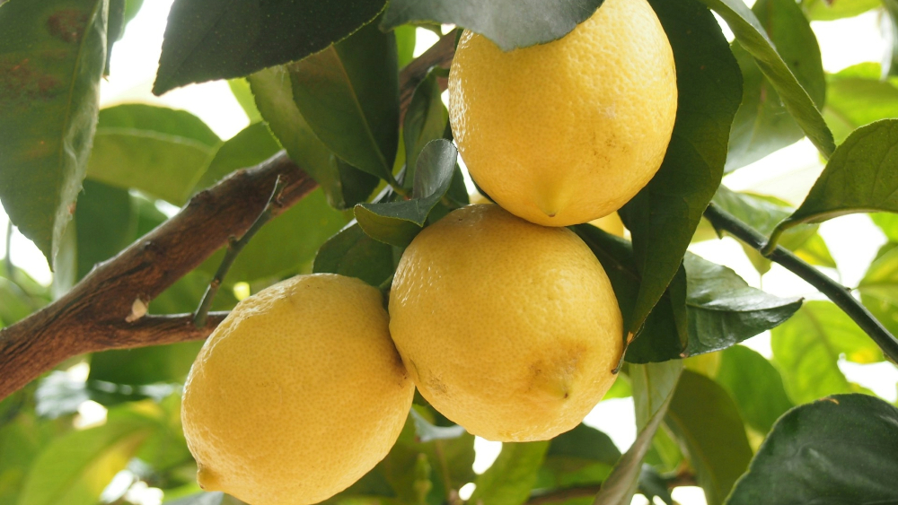

Lemon tree en nuestra playlist
La canción Lemon tree de Fools Garden amplía la variedad musical de la sección Aleatorio de Good Vibrations.

Lemon Tree es una canción interpretada por la banda alemana de rock alternativo Fools Garden. La banda nació en 1991 y estaba formada por Peter Freudenthaler (voz), Volker Hinkel (guitarra), Thomas Mangold (bajo), Roland Röhl (teclados) y Ralf Wochele (batería).
La canción pertenece al tercer álbum del grupo, Dish of the day, fue publicada como sencillo en 1995 y al año siguiente se convirtió en un éxito internacional.
Peter Freudenthaler explica que escribió la canción una tarde del domingo mientras esperaba a su novia. En la canción describe la situación de forma sencilla:
I'm sittin' here in the boring room
It's just another rainy Sunday afternoon
I'm wastin' my time, I got nothin' to do
I'm hangin' around, I'm waitin' for you
...
Su tema es la espera, lo que nunca acaba de llegar. La letra expresa emociones mezcladas: melancolía, aburrimiento y cierta desesperanza plácida porque no pasa nada. Y todo ello con un ritmo y melodía sencillos que son los ingredientes básicos de esta canción.
La revista Music & Media en su boletín de febrero de 1996 escribió que el tema es una mezcla entre una melodía de circo pegadiza y un bubblegum pop de finales de los 60 que atraerá a un público muy amplio.
El éxito de la canción fue inesperado, incluso para su autor que declaró:
La canción tuvo éxito en casi todos los lugares del mundo, ¿por qué deberíamos negar esta parte importante de nuestra carrera? Tocamos música, hacemos conciertos y podemos ganarnos la vida... ¿qué más podemos desear?
Una declaración en la que Peter Freudenthaler se plantea preguntas que no esperan respuesta; como las de la canción:
I wonder how, I wonder why
Yesterday you told me 'bout the blue, blue sky
And all that I can see is just another lemon tree
Fools Garden - Lemon tree (Vídeo oficial HD)
Su inclusión en nuestras listas fue una petición de uno de nuestros seguidores y estamos encantados de que esté aquí.
¿Estás pensando en alguna canción que merece estar con nosotros? Rellena el formulario y envíanos tu propuesta.